Built With
The Tech Stack
 React
React TypeScript
TypeScript Vite
Vite Tailwind CSS
Tailwind CSS
 FastAPI
FastAPI OpenAI API
OpenAI API Firebase
FirebaseGoogle
Health
Vercel
 Three.js
Three.js Node.js
Node.jsFrom bio-signals to daily action FitTrack is an AI wellness assistant that turns the noise of biometrics into the clarity of a conversation.
FitTrack was placed among the TOP 5 FINALISTS out of all competing teams, recognized for its innovative approach to turning raw biometrics into actionable daily coaching.
We are the most tracked generation in history, yet we are also the most confused. Existing apps collect massive amounts of numbers but leave the heavy burden of interpretation entirely on the user. FitTrack solves this "last mile" problem — bridging raw biological signals like HRV, sleep architecture, and stress loads with actual human behavior.
FitTrack is a wellness and recovery assistant that brings activity tracking, nutrition insights, and progress reporting into a single, user-friendly experience. Designed for students, employees, and anyone who wants a clear, actionable view of their health data.
Personalized daily metrics including sleep debt, HRV, stress scores, and energy curves.
AI-powered calorie strategy with meal tracking, macro breakdowns, and 7-day trend analysis.
Downloadable progress reports for personal tracking or sharing with health professionals.
Firebase authentication with a clean onboarding experience and session management.
A walkthrough of FitTrack's key interfaces — from the bold landing page to the intelligence-driven dashboards.
Bold, cinematic hero with clear call-to-action. "It's not fitness. It's a lifestyle."
Calorie strategy, daily targets, meal logging, and activity breakdown at a glance.
Sleep architecture, activity rings, stress scores — built on your Google Fit profile.
Predicted energy windows based on yesterday's sleep. 7-day stress trend with HRV and RHR data.
AI-guided summary based on today's entries — with a coach avatar and audio replay.
AI-generated coaching tips across sleep, training, nutrition, and stress management categories.
The novelty of FitTrack is that we don't just "ask an AI" for generic advice. We compute hard metrics first to ensure the coaching is always grounded in real data.
Pull real-time health signals — sleep stages, resting heart rate, HRV — via Google Health integrations.
Compute hard metrics locally on the backend: Sleep Debt, Energy Curves, Stress Loads, and caloric targets.
Hard facts are passed to OpenAI via structured Pydantic schemas to generate categorized, narrative coaching tips.
Building a cross-platform health assistant that bridges multiple cloud services presented significant engineering challenges.
Connecting a Vercel frontend to a Render backend required precise CORS configuration for secure cross-domain communication.
Render's free tier can "spin down" after inactivity. We designed the frontend to handle potential wake-up delays gracefully with loading states.
Ensuring the LLM returns consistent, structured advice instead of hallucinations. Solved with strict Pydantic schemas so the AI outputs valid JSON the UI can reliably render.
By replacing rigid search bars with semantic intake — where a user simply types "burrito bowl and a 3-mile walk" — we reduced logging friction dramatically.
By showing the Energy Curve — a visual of daily energy windows — we aren't just giving orders. We're teaching users how to interpret their own signals.
ReactTypeScriptViteTailwind CSS
FastAPIOpenAI APIFirebaseThree.jsNode.jsPrerequisites: Node.js 18+ and Python 3.10+
npm install
pip install -r requirements.txt
npm run dev
uvicorn main:app --reload
npm run build
Check out the code, explore other projects, or get in touch.